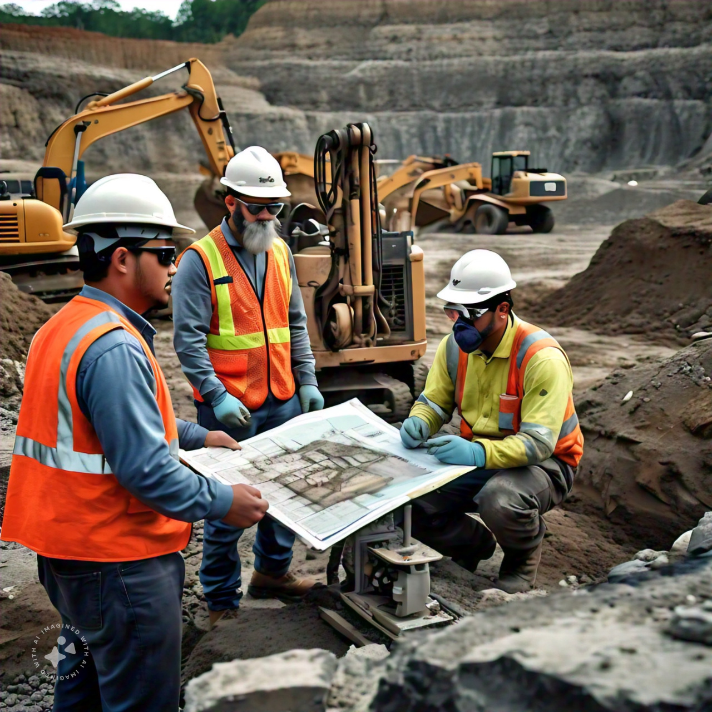

¿Qué es la Ingeniería Geológica?
La Ingeniería Geológica es una disciplina que combina los principios de la geología con la ingeniería para resolver problemas relacionados con la Tierra y sus recursos. Los ingenieros geólogos aplican su conocimiento de las ciencias de la Tierra para:
- Evaluar y mitigar riesgos geológicos como terremotos, deslizamientos de tierra y erupciones volcánicas.
- Explorar y extraer recursos naturales como petróleo, gas, minerales y agua subterránea.
- Diseñar y supervisar proyectos de construcción, incluyendo túneles, presas y cimientos de edificios.
- Estudiar el impacto ambiental de las actividades humanas y desarrollar soluciones sostenibles.
- Investigar la historia de la Tierra y los procesos que la han moldeado a lo largo del tiempo.
En la UNAM, nuestro programa de Ingeniería Geológica prepara a los estudiantes con una sólida base teórica y práctica, utilizando tecnologías avanzadas como modelado 3D, realidad virtual y sistemas de información geográfica para formar profesionales capaces de enfrentar los desafíos geológicos del siglo XXI.
